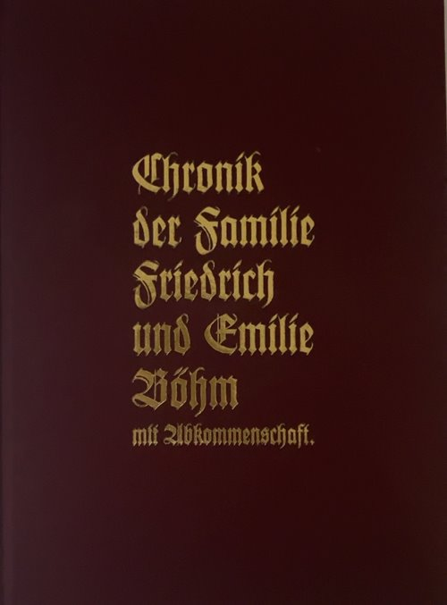

Sélection clonale
Dans les vieilles vignes, on choisit et multiplie les ceps les plus sains et les plus expressifs.
 Arbre généalogique01
Arbre généalogique01
La famille Böhm
L'arbre généalogique de la famille Böhm remonte au Palatinat. En son centre se trouve Wachenheim, sur la Route des vins allemande, peinte avec l'année 1579 et entourée des armoiries de la famille et de ses ancêtres.
L'arbre fait partie de la « Chronique de la famille de Friedrich et Emilie Böhm et de leurs descendants », publiée par Jorge Böhm pour la famille en 2013.

 Jorge Böhm02
Jorge Böhm02

Fondateur du Plansel Group
Chercheur en viticulture, négociant en vins et fondateur de Viveiros Plansel. Sa sélection clonale marque aujourd'hui encore une grande partie des vignobles du Portugal.
« Le Portugal a besoin de sa propre recherche, pour ne pas dépendre de cépages inadaptés à son sol et à son climat. »
Parcours
Comendador Jorge (Hans Jörg) Böhm, né en 1938 à Neustadt an der Weinstraße, est issu d'une famille allemande de négociants en vin. En 1961, son voilier s'échoue près de Cascais, et il tombe amoureux du Portugal. Dès 1969, l'entreprise familiale qu'il dirige est le premier importateur de vins portugais en Allemagne.
Après des études de sélection de la vigne à Geisenheim, il fonde Viveiros Plansel en 1981 et lance la première sélection clonale systématique des cépages portugais, avec l'Universidade de Évora et l'actuel INIAV. Plus de 30 projets de recherche plus tard, les clones Plansel sont reconnus en Californie, en Nouvelle-Zélande et en Australie, et une grande partie du vignoble portugais repose sur des plants Plansel, distribués par Viveiros Plansel et Vinverus.
En 2006, le président de la République portugaise l'a nommé Comendador de Mérito Agrícola.
Naît à Neustadt an der Weinstraße, dans une famille allemande de négociants en vins.
Le voilier de Jorge Böhm s'échoue dans le port de Cascais. Il reste, découvre le pays et voit le potentiel des cépages de l'Alentejo.
Sous sa direction, l'entreprise familiale devient le premier importateur de vins portugais en Allemagne.
Il achète ses premières terres près de Montemor-o-Novo. Elles deviennent la pépinière Viveiros Plansel.
Fondation de Viveiros Plansel et début de la première sélection clonale systématique des cépages portugais.
Avec Paulo Laureano, le premier vin naît dans le chai expérimental de l'Université d'Évora. Son nom : Plansel, pour « Plantas Seleccionadas ».
Comendador de Mérito Agrícola, nommé par le président de la République
Parution d'O Grande Livro das Castas, couronné par le prix de l'OIV en 2010.
Meilleur technicien viticole, Revista de Vinhos
Plaque d'honneur de l'Universidade de Évora
Médaille d'honneur de l'Academia das Ciências de Lisboa
Nouveau livre : Livro Branco das Castas Vitícolas.
Recherche
Dans les vieilles vignes, on choisit et multiplie les ceps les plus sains et les plus expressifs.
Des vignes qui demandent moins de traitements. Pour Böhm, c'est la mission la plus importante de la filière.
Du matériel végétal pour des étés plus chauds et moins d'eau, testé en Alentejo.
Des cépages portugais presque oubliés sont redécouverts et testés en vin.
 Dorina Böhm-Lindemann03
Dorina Böhm-Lindemann03

La génération suivante
Dorina a étudié l'œnologie à l'université de Geisenheim. En 1997, elle a fondé le chai de la Quinta da Plansel sur les terres de son père à Montemor-o-Novo ; en 1999 est né son premier vin haut de gamme à son nom, 2 000 bouteilles. Aujourd'hui, elle dirige la Quinta comme CEO, avec ses filles Júlia et Luísa.
Elle enseigne à l'université de Geisenheim les cépages, le climat et les régions du Portugal et est dégustatrice officielle du Mundus Vini. Ses vins ont été récompensés au Mundus Vini, au Decanter et à l'IWC.
 Luísa Lindemann04
Luísa Lindemann04

Œnologie et ventes internationales
Luísa est la fille de Dorina et codirige la Quinta da Plansel. Elle est responsable de l'œnologie et des ventes internationales.
Comme sa mère, elle est dégustatrice officielle de Mundus Vini. Ensemble, elles animent des dégustations lors d'événements, dans des hôtels et des salons, en Europe et dans le monde.
 Júlia Lindemann05
Júlia Lindemann05

Marketing, réseaux sociaux et finances
Júlia est la fille de Dorina et codirige la Quinta da Plansel. Elle s'occupe du marketing, des réseaux sociaux et des finances.
Son nom figure sur le Júlia Lindemann Tinto 2019 Limited Edition, médaille d'argent au Mundus Vini 2024.
 Livres06
Livres06
Livres



Wikipédia ne lui consacre pour l'instant que des articles en portugais et en allemand. Cette page résume sa vie en sept langues.
 Contact07
Contact07
Contact
Pour vos questions sur les cépages, les clones, la recherche et ses livres.